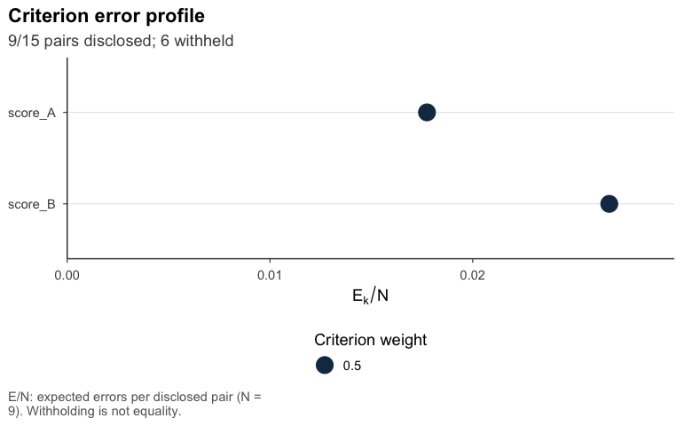
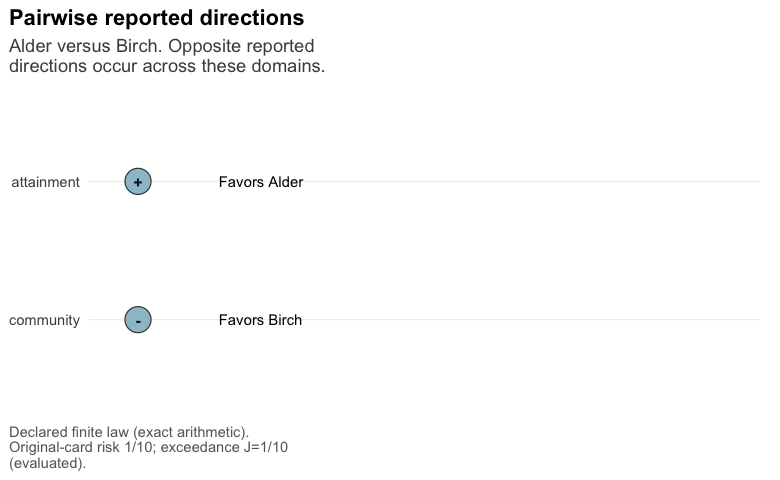

Author and maintainer: JoonHo Lee (jlee296@ua.edu).
postrank assigns integer grades (1, 2, ..., G) to entities—such as schools, employers, or geographic areas—from posterior draws, normal or mixture distributions, or precomputed pairwise comparison probabilities on one or several criteria. Grade 1 denotes the highest priority. Assigning two entities to different grades reports an ordering between them; assigning them to the same grade leaves the pair unordered rather than claiming that their underlying values are equal.
Grades minimize posterior expected wrong-direction errors (cost 1) plus a cost tau for each pair left unordered in the same grade, averaged over all entity pairs. Across multiple criteria, user-chosen weights combine criterion-specific losses into one common grading, or the multidomain functions (postrank_mdomain_*) report a separate grade per domain under joint error-exceedance caps. Statistical model fitting takes place outside postrank; all results are conditional on the posterior you supply.
Installation and solvers
Install postrank from GitHub:
install.packages("remotes")
remotes::install_github("joonho112/postrank")
library(postrank)Loading bundled datasets, reading precomputed examples with postrank_example(), extracting tables, drawing plots, writing HTML reports, and running multidomain profile calculations do not require an optimization solver.
Computing new common-grade solutions with postrank() or postrank_solve() requires a mixed-integer solver, installed separately:
-
HiGHS (free, open source on CRAN): install once and set it for the R session with:
install.packages("highs") options(postrank.backend = "highs") Gurobi (default when no solver is specified): requires Gurobi Optimizer version 10 or later, a valid license, and the
gurobiR package from theRsubdirectory of the Gurobi installation. Follow Gurobi’s guides to install Gurobi Optimizer, set up a license, and install the R interface.
An explicit backend = "highs" or backend = "gurobi" argument overrides getOption("postrank.backend"); if neither is set, "gurobi" is used. If the selected solver is not installed or cannot be loaded, postrank stops with an error; it never switches to the other solver, even if a run reaches its time limit or encounters solver trouble.
Case-study data conditions
The three bundled case-study datasets are adapted from public sources and keep their source-specific conditions, separate from the MIT code license: pr_case_cde preserves California Department of Education source attribution (2025–26 Dashboard) without substituting MIT or Creative Commons terms or implying CDE endorsement; pr_case_krw retains the noncommercial CC-BY-NC notice (license version unspecified in the source) from Kline, Rose, and Walters (2024; openICPSR E198284V1); and pr_case_alabama retains CC BY 4.0 attribution to Opportunity Insights and the U.S. Census Bureau (Chetty et al., 2022; Harvard Dataverse doi:10.7910/DVN/NKCQM1). Full details and adaptation notes are in system.file("extdata", "case-studies", "DATA-NOTICE.md", package = "postrank").
First example: one criterion
pr_tutorial contains six synthetic sites (A through F) whose score distributions are specified directly as independent normal posteriors with standard deviation 0.2 (higher values mean higher priority; simulated teaching data, not empirical observations).
With HiGHS installed, run postrank() directly:
one <- postrank(pr_tutorial$one, tau = .2, G_max = 3L,
backend = "highs",
control = postrank_control(time_limit = 60, threads = 1L, seed = 1304L))Without running a solver, load the precomputed result from an equivalent call with postrank_example(). These stored results were computed with the explicitly selected highs backend (backend = "highs") under the settings shown above (G_max = 3L caps the report at three occupied grades, and a single criterion receives weight 1):
one <- postrank_example("tutorial_one")
one
#> <postrank_analysis> 6 entities in 3 grades (sizes 2 / 2 / 2)
#> One criterion: score_A.
#> Posterior loss: 0.0417.
#> Disclosed 12 of 15 pairs (80.0%); withheld 3.
#> Expected error among disclosed pairs: score_A 0.002.
#> Solver: Optimal within solver tolerances.
#> Optimization gap: 0; requested absolute gap 1e-08.
#> Prepared: report card.
#> Grade 1 has highest priority; a shared grade withholds the comparison.
#> grade 1 (2): A, B
#> grade 2 (2): C, D
#> grade 3 (2): E, F
#> ! 1 warning recorded: Reported lower bound exceeded the validated action r...
#> i summary(x) explains the loss, settings and bounds; get_grades(x) returns
#> all grades.In the console output, "Disclosed" counts ordered pairs, "withheld" counts unordered pairs (shared grades), and the recorded warning notes that floating-point tolerances placed the raw solver lower bound slightly above the checked grading’s loss ("validated action risk"), so postrank clamped the bound to the loss and recorded gap 0.
Extract the two-column (entity_id, grade) table in input entity order:
as.data.frame(one)
#> entity_id grade
#> 1 A 1
#> 2 B 1
#> 3 C 2
#> 4 D 2
#> 5 E 3
#> 6 F 3Plot the report card with postrank_plot_report_card(one) (or plot(one)) to view the assigned grades alongside 90% marginal posterior intervals for each site’s score (these intervals summarize score uncertainty one site at a time and do not assign probabilities to grade labels):
A common grading across two criteria
pr_tutorial$two adds score_B while keeping the score_A posterior for the same six sites. With multiple criteria, weights is a required policy choice that sets how wrong-direction errors trade off across criteria (neither score units nor posterior spread determine the weights):
two <- postrank(pr_tutorial$two,
weights = c(score_A = .5, score_B = .5), tau = .2, G_max = 3L,
backend = "highs",
control = postrank_control(time_limit = 60, threads = 1L, seed = 1304L))
two <- postrank_example("tutorial_two")
two
#> <postrank_analysis> 6 entities in 3 grades (sizes 4 / 1 / 1)
#> 2 criteria: score_A, score_B.
#> Posterior loss: 0.0933.
#> Disclosed 9 of 15 pairs (60.0%); withheld 6.
#> Expected error among disclosed pairs: score_A 0.018; score_B 0.027.
#> Solver: Optimal within solver tolerances.
#> Optimization gap: 0; requested absolute gap 1e-08.
#> Prepared: report card.
#> Grade 1 has highest priority; a shared grade withholds the comparison.
#> grade 1 (4): A, B, C, D
#> grade 2 (1): E
#> grade 3 (1): F
#> i summary(x) explains the loss, settings and bounds; get_grades(x) returns
#> all grades.One shared grading now applies to both criteria, leaving unordered several pairs that were separated on score_A alone. postrank_plot_profile() shows the expected wrong-direction errors per ordered pair (E/N) on each criterion:

Solver status, lower bound, and optimization gap describe optimization over the supplied comparison probabilities; posterior model adequacy and Monte Carlo simulation error require separate checks.
Passing your own posterior draws
To grade entities from your own draws x entities x criteria numeric array, describe the posterior in plain arguments with postrank_describe() and wrap the array with postrank_draws():
set.seed(901)
arr <- array(rnorm(120 * 4 * 1), dim = c(120, 4, 1),
dimnames = list(NULL, paste0("site_", 1:4), "need"))
decl <- postrank_describe(
estimand = c(need = "Latent site need in a specified standard normal law"),
population = "Four illustrative sites", time = "Static illustration",
units = "Standardized need units", data = "No external observations; specified law",
model = "Independent standard normal coordinates",
identification = "Each site coordinate is defined directly by the law.",
joint = "Each draw holds one value per site.",
sampling = "120 independent rnorm() draws after set.seed(901); no warmup or thinning.",
ties = "Continuous normal coordinates have zero probability of exact equality.",
software = "Base R rnorm()", source = "In-memory array arr",
label = "readme-draws", data_version = "1", values = arr)
draws <- postrank_draws(arr, regime = "iid", declarations = decl)
draws$entity_ids
#> [1] "site_1" "site_2" "site_3" "site_4"Other posterior representations have matching constructors:
| Posterior representation | Functions |
|---|---|
Posterior draw arrays, matrix lists, or posterior::draws_array
|
postrank_describe(), postrank_declarations(), postrank_draws(), as_postrank_posterior()
|
| Analytic normal or shared-state normal mixture posterior |
postrank_gaussian_coefficients(), postrank_mixture_coefficients()
|
| Precomputed tie-free pairwise comparison probabilities | postrank_probabilities() |
| Posteriors with positive probability of exact equality |
as_postrank_tie_draws(), postrank_tie_pairwise(), postrank_tie_solve()
|
| Separate grade per domain under joint error-exceedance caps |
postrank_mdomain_input(), postrank_mdomain_decision(), postrank_mdomain_solve()
|
Validation checks array shapes, probability bounds, and internal consistency with your declarations; scientific assumptions remain yours.
Multidomain profile report cards
When entities should receive a separate grade in each domain rather than one common grade—for example, when priorities reverse across domains—the postrank_mdomain_* functions evaluate entity-by-domain grade matrices and search declared candidate sets under exact rational policy thresholds (via the optional gmp package, with no mixed-integer solver required):
if (requireNamespace("gmp", quietly = TRUE)) {
ids <- c("Alder", "Birch")
domains <- c("attainment", "community")
x <- array(c(3, 2, 2, 3, 2, 3, 3, 2), c(2L, 2L, 2L),
dimnames = list(c("usual", "reversal"), ids, domains))
targets <- setNames(lapply(domains, function(d) list(
definition = paste("Fictional", d, "priority coordinate"),
units = "illustrative score", orientation = "larger_is_higher",
equality_classes = setNames(ids, ids),
equality_provenance = "No structural identity between distinct units."
)), domains)
provenance <- list(input_id = "readme-support", law_id = "readme-law",
proper_law = TRUE, producer = "Self-contained teaching example",
joint_generation = "Each slice is one complete state of both domains.",
sampling_assumptions = list(finite_support_origin =
"These two states exhaust the specified fictional law."))
input <- postrank_mdomain_input(x, targets = targets, provenance = provenance,
representation = "exact_finite_law", masses = c("9/10", "1/10"))
decision <- postrank_mdomain_decision(tau = "1/5", t = "0", alpha = "1/5")
G <- matrix(c(1, 2, 2, 1), 2L, dimnames = list(ids, domains))
card <- postrank_mdomain_evaluate(input, G, decision)
print(postrank_mdomain_grades(card))
print(postrank_plot_mdomain(card, view = "pair", units = ids))
} else {
message("Multidomain example skipped: install the optional package 'gmp'.")
}
#> attainment community
#> Alder 1 2
#> Birch 2 1
Pass exact rational or decimal strings such as "1/5" when policy thresholds are exact fractions. Optimality in postrank_mdomain_solve() holds within the declared candidate set, and exact arithmetic over a finite distribution or sample does not verify model specification.
Extracting results and where to read next
as.data.frame(two, what = "report_card")
get_profile(two)
get_relations(two)
postrank_report(two$fit, output_file = tempfile(fileext = ".html"), analysis = two)
postrank_plot_pairwise(two) # pairwise error probabilities
postrank_plot_relations(two) # ordered and unordered pairs
format(two, width = 72, tier = 2) # plain-text summary linesThe 16 shipped vignettes are organized by workflow stage (browse with vignette(package = "postrank") or on the package website):
-
Start here:
a1-getting-started(first one- and two-criterion analyses),a5-your-posterior-results(passing draws, normal/mixture posteriors, or pairwise probabilities),a6-reading-exporting-results(tables, plots, text, and HTML reports), anda7-figures-sensitivity(baseline comparisons,taufrontiers, error budgets, and sensitivity grids). -
Applied case studies:
a2-cde-accountability(California schools),a3-krw-race-gender(97 large U.S. employers), anda4-alabama-opportunity(67 Alabama counties). -
Multidomain profiles:
mdomain-quickstartandmdomain-decisions(separate per-domain grades and joint error-exceedance protection). -
Methods and figure gallery:
m1-ranking-and-loss,m2-several-criteria,m3-posterior-inputs,m4-ties-and-withholding,m5-computing-grades,m6-uncertainty-diagnostics, andfigure-gallery. Release compatibility notes are insystem.file("MIGRATION-1.2.0.md", package = "postrank").
Citation
citation("postrank") returns the package, its theory book, and the report-card method:
R package. Lee, J. (2026). postrank: Posterior Ranking with Integer Grades. R package version 1.3.0. GitHub repository · Package documentation.
Theory book. Lee, J. (2026). Decisions from noisy multidimensional indicators: Theory, evidence, and posterior grading (Version 1.0.0). Zenodo. https://doi.org/10.5281/zenodo.23790260. Read online.
Report-card method. Kline, P., Rose, E. K., and Walters, C. R. (2024). A discrimination report card. American Economic Review, 114(8), 2472–2525. https://doi.org/10.1257/aer.20230700.
Acknowledgments
The research underlying this package was supported primarily by the National Academy of Education and the Spencer Foundation through the 2025 National Academy of Education/Spencer Postdoctoral Fellowship.
The research reported here was supported by the Institute of Education Sciences, U.S. Department of Education, through Grant R305D240078 to The University of Alabama. The opinions expressed are those of the authors and do not represent views of the Institute or the U.S. Department of Education.